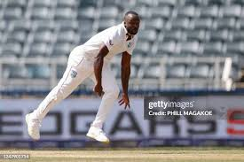

West Indies Test Team
Resilient side with a storied Test legacy.
About West-Indies Test Team
Country: West Indies
Home Ground: Various (e.g., Sabina Park, Jamaica)
Captain: Kraigg Brathwaite
Coach: Andre Coley
The West Indies Test team combines experience with emerging talent, aiming to reclaim past glory.
West-Indies Players
Kraigg Brathwaite (C)
Captain, batsman.
Tagenarine Chanderpaul
Batsman, gritty opener.
Jason Holder
All-rounder, pace bowler.
Joshua Da Silva
Wicketkeeper-batsman, reliable.
Akeal Hosein
Spinner, left-arm orthodox.

Kemar Roach
Bowler, pace veteran.
Alzarri Joseph
Bowler, pace spearhead.
Jayden Seales
Bowler, young pacer.

Raymon Reifer
All-rounder, medium-pacer.
Jermaine Blackwood
Batsman, middle-order.

Nkrumah Bonner
Batsman, middle-order.